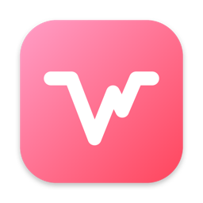

ValPulseAnswers to common questions about ValPulse. If yours isn't here, send us an email and we'll get back to you, usually within two days.
Yes. You sign in on Riot Games' own page (auth.riotgames.com), shown inside the app. Your password goes straight to Riot and never reaches ValPulse. The app keeps only Riot's session cookie on your device so you stay signed in.
No. On the first screen, tap Look around with sample data to explore every screen with a sample account.
If Riot asks for a two-factor code, enter the code Riot emailed you on the same page. If sign-in still fails, check your connection, wait a minute and try again. Riot sometimes limits repeated sign-in attempts for a short time.
Tap your account at the top of any screen. You can add up to five accounts, switch between them in one tap, or sign out of one. Signing out deletes that account's session from your device.
At the same moment as in the game. The countdown shows the time left, and ValPulse reloads the shop by itself when it resets.
They're the game's skin rarities, from lowest to highest. Each mystery box shows the rarity of the skin inside before you reveal it.
It's an estimate based on the usual store price of each skin. Skins from the battle pass, events or bundles that are no longer sold may be valued differently from what you paid.
Yes. It edits your own cosmetic loadout, exactly as you could inside the game. The change appears the next time the game loads your loadout.
Only on your device. It starts from the first day you open ValPulse and is kept separately for each account.
Matches can take a few minutes to appear after they end. The live game card shows from agent select until the match finishes. To check again, use Settings › Refresh everything.
Email us with your device, iOS version and what happened. A screenshot helps a lot.
No. ValPulse is an independent fan project. See the note below.